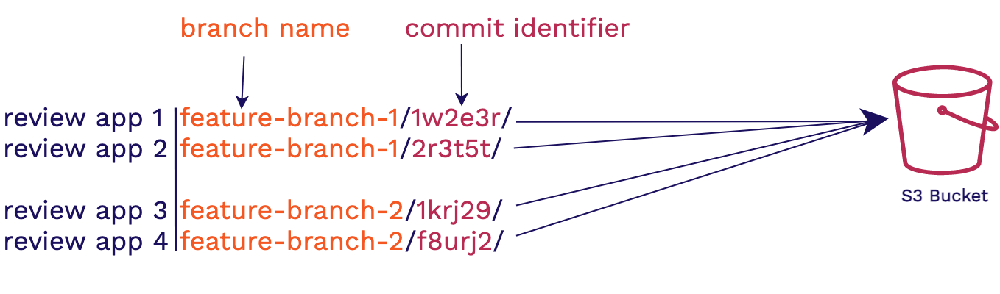
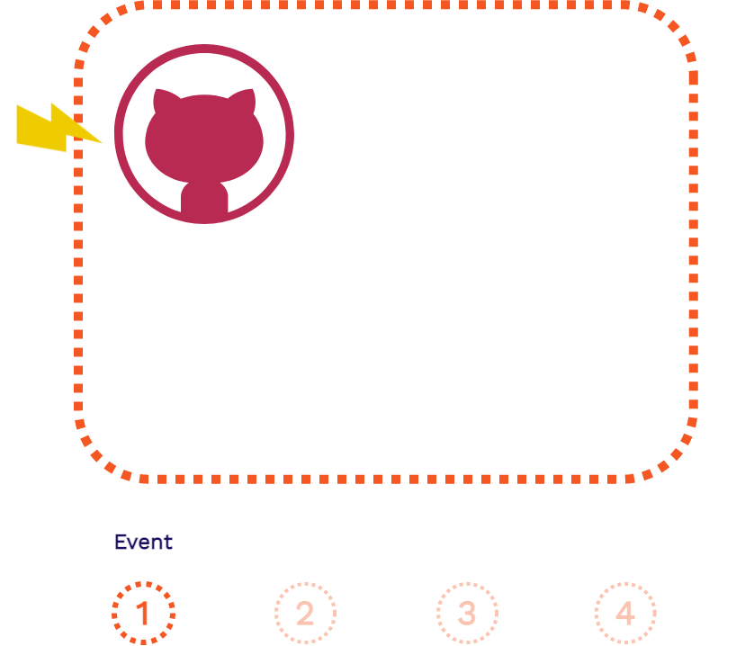

Case Study
1. What is Stagehand?
Stagehand is a drop-in solution that provides review apps for modern frontend applications. Using AWS, GitHub Actions, and some Stagehand client-side code we set-up, deploy, manage, and teardown review apps for your frontend application. All the code and infrastructure lives on your own accounts so you're in total control.
All you have to do is install the Stagehand CLI via our NPM package
and run stagehand init in your local repo. Once your code is pushed to a GitHub repository, you will have
review apps automatically deployed for you to view and share whenever
you open a pull request or make any additional commits on that pull
request. We automate all the hard parts for you, so you can focus on developing your application code.
Here's an example of what it looks like when you're all set up:
The video starts with a pull request opening, triggering a review app to be created. A commit is then made off-screen with a "New Change", creating another review app. Every review app has our basic Stagehand dashboard which opens up by hovering over the banner at the top.
The code for the dashboard is inserted into your GitHub repository in the stagehand.html file so feel free to change it and customize it to fit your own needs!
Over the course of this case study, we're going to go through the problems we solve for developers and then we'll dive into how we built Stagehand and the challenges that came along with it.
2. What are Review Apps?
In this section we will dive into review apps and the value they bring to frontend developers.
2.1. Staging Environments
To see where review apps fit into the overall continuous development of a production application, let’s consider the various environments involved in that application.
The first environment we touch, development, is where we make code changes to our application. This involves a developer coding a feature and testing it out on their local machine.
Once we're satisfied with how that feature works locally, we can move it on to a dedicated testing environment. This environment is optimized for whatever aspects of the application are being tested (specific units, end-to-end functionality, etc.).
Prior to deploying live, the new feature code is moved to a staging environment. This environment is supposed to match the production environment as closely as possibly for any final checks. [1] Finally, the new code moves to the production environment to go live.
“A staging environment (sometimes called a pre-production environment) is the environment where your code is ‘staged’ prior to being run in front of users so you can ensure it works as designed.” [2]
A staging environment can be used for quality assurance teams, automated end-to-end testing, and for product managers and/or other stakeholders to be able to validate that new features and functionality work as intended.
Review apps generally fall under the same category as staging environments, though their usefulness may expand beyond that.
2.2. Using a Staging Environment
Consider this scenario where you are a developer of a frontend application:

The product manager wants a responsive navigation bar added to the application. After coding up and testing your new navigation bar feature, you deploy your changes to a staging environment.
In this staging environment, the product manager and other stakeholders can view your changes in a production-like environment. They can play around with the new functionality, making sure it is what they want and that everything works properly. Then, once your new feature is approved, it can be moved into production to be released.
Now you, Alice, and Bob are all working on multiple features of the frontend application at the same time. You are working on the navigation bar feature, Alice is working on the footer, and Bob is working on the page content:

All of these features will have to be deployed to a shared staging environment. The new features are verified by the product manager and other stakeholders before being approved to go into production.
Sharing this environment means maybe you and Alice have to wait until Bob is done using it before you can deploy and share your new features. Or even, you or Alice may have to clean up the staging environment if Bob made changes to it. And if your code now conflicts with Bob’s, you may have to resolve these conflicts.
This type of bottleneck in the development cycle is far too common and can be remedied by having review apps.
2.3. Review Apps
Review apps are ephemeral, fully-functional versions of a production application that can be easily deployed and shared with others[3].
- Ephemeral - temporary environments that can be built and torn down at any time
- Fully-Functional - end-to-end production-like functionality, temporary versions of the main application
- Easily-Deployed - instantly built and deployed whenever there is a change in an application’s code
- Self-Contained - isolated from production, these environments cannot affect production or other review apps and vice versa

Your team has now introduced a review app solution like Stagehand to the mix. With review apps, each developer on your team now has their own isolated environment where they can easily deploy and share their new features. This reduces conflicts over shared staging environments.
Each review app can be accessed via a unique, shareable URL. Sharing this with your product manager and other non-technical stakeholders will allow you to get feedback earlier and more quickly.
Review apps also enable greater collaboration within your development team itself. You do not have to pull down each other’s code and get it running locally to collaborate.
This makes checking out your work in a production-like environment as you are developing as simple as possible.
2.4. Collaborative Workflow
To understand how review apps look like in the context of GitHub pull requests, we'll walk through a similar scenario. It starts with you opening a pull request for your new navigation bar feature. The product manager will have to see the change and give approval before your code can move on to production.

As soon as the pull request is opened, a review app is automatically built and deployed for you, and it can be accessed with a unique URL. You share this review app with your product manage but they want you to move the navigation bar icon to the other side of the page.

After updating some code and making a new commit to the same branch, a whole new review app is built and deployed. Both review apps are live simultaneously enabling you to open each one and compare them side-by-side.
You share the link for the new review app with your product manager, and after approval you are clear to merge your changes to production. When this pull request is closed, all review apps associated with it will be automatically disposed of which will free up any unnecessary cloud resources.
3. Frontend Review Apps
Now that we understand what review apps are and what their value is, we will take a look at what we mean when we say that Stagehand is for modern frontend applications.
3.1. Why Frontend Review Apps?
Frontend review apps are an incredibly helpful tool for developers.
First, they deal heavily with the end user experience so more visual testing and verification in a deployed environment is needed. You want to be able to mimic the eventual user experience as much as possible during development.
Second, they are more lightweight. They do not need to spin up as much infrastructure nor allocate as many resources as a full stack application. Also, because frontend applications are decoupled from data level concerns, they better mimic the final production environment as a full stack application.
Finally, because the functionality of frontend applications are more user or consumer facing, there may need to be more input from non-technical stakeholders. You need a way to easily deploy and share your latest changes with them during development.
3.2. Frontend Application Architecture
To give some context for what type of architecture we are for, we'll contrast it first with a traditional 3-tier full stack web architecture.


First, a client requests an asset from an application, that request is first handled by the web server. Then the application server will handle the business logic for the application, including fetching data from the database and generating the assets for the response. Finally, the response is sent back to the client, generally HTML, CSS, and JavaScript files.
The key takeaway from this full stack architecture is that the assets are generated at request time. So it is only when the client requests our application that the assets are actually built. This is in contrast to what happens in a frontend application.
In a decoupled frontend application architecture, such as a site built with a static site generator, things happen in the opposite direction:


In this architecture, when a change is made to the codebase of the application the assets are automatically built. Then those pre-built assets are typically pushed to a content delivery network (CDN) for hosting, replacing old versions of the assets. When a client makes a request for the application, these latest pre-built assets can be instantly served from an edge location on the CDN.
Stagehand supports frontend applications like this that can be pre-built and instantly served from a CDN.


Modern dynamic frontend applications take the previous architecture a step further. They both are pre-built and served from a CDN.
However with modern dynamic frontend applications, more complex client-side JavaScript is sent back to the client in the response. Then data can be fetched and rendered by client-side code using external APIs. These APIs could be third party such as Stripe, Auth0, Firebase or your own custom built API. This gives these applications more dynamic functionality, similar to a full stack application.
If you're familiar with JAMstack[5] or Single Page Applications (SPAs), they fall under this category. Stagehand also supports these.
4. Existing Solutions
There are generally two categories of existing review apps solutions: feature solutions and service solutions.
4.1. Feature vs. Service Solutions
Feature solutions (Reviews As A Feature) offer review app functionality as part of a larger hosting service. In order to take advantage of their review apps feature, you typically must host your entire application on their hosting service. Examples include Netlify with their “Deploy Previews” feature, Vercel with their “Preview Deployments” feature, and Heroku with their “Review Apps” feature.
Service solutions (Reviews As A Service) exist specifically for providing review apps for developers. They provide developers review app functionality without having to host their entire application on their platform. There are a wide range of examples here as well, including FeaturePeek, Release, and Tugboat.

Neither of these types of solutions are truly open source. They do not give you control over the infrastructure or code used to manage your review apps. However, they are both very convenient solutions as they automate the deployment and management of review apps for you.
Service solutions are more flexible as they specialize in review apps and do not tie developers to a larger service. But both solutions host your review apps for you and are feature-rich right out of the box.
4.2. DIY
If you wanted to self-host review apps and have the control of an open source solution you would have to provision and configure a rather large number of resources:

You will need a cloud storage solution to store all of the build assets for each of your review apps. Then you will need to provision and configure a CDN (content delivery network) for secure and fast hosting. For any processing needs such as routing, you may have to write and deploy a number of serverless functions.
The most extensive resource that you will have to provision and configure is a build server. You will have to set it up to automate the building, deploying, and tearing down of your review apps. You will also have to integrate it with some version control platform, such as GitHub. Finally, you will need some services to secure your review apps according to your needs.
The DIY approach gives us all of the benefits of open source as we now own the infrastructure and code. However, provisioning and configuring so many resources to get review apps up and running is far from convenient. DIY has the same flexibility as Reviews as a Service but it won't be feature rich right out of the box.

Stagehand gives you the same tradeoffs as the DIY approach with one key difference. We automate provisioning and configuration of all of the infrastructure and setup for you. Stagehand is fully open source, giving you control of your self-hosted infrastructure and code. As a bonus we also provide you with a dashboard wrapper for each of your review apps.
Stagehand provides the same collaborative workflow that we went over earlier, reducing friction in your development process.
5. Building Stagehand
Stagehand is built to be integrated directly with GitHub pull requests. We also provide a CLI which we'll get into later in the case study. Stagehand is agnostic to any frontend that can be pre-built and served from a CDN. This includes frameworks such as Gatsby, Next, Hugo, React, etc.
We built Stagehand in such a way to be less-dependent on if frameworks change certain configurations or if a new hot framework shows up on the market. We ask for your build commands and how your app outputs its HTML assets. This is all the information we need to set up your local repository. Let's dive into how we built it.

Stagehand is divided into 3 components: AWS Infrastructure, GitHub Actions, and Client-side code. We'll go through them in that order so you'll be able to fully understand each piece seen in the diagram above.
6. AWS

There are two flows through our AWS infrastructure. The first is when review apps are being created or torn down. The second is when someone views a review app.
6.1. S3 Bucket
The S3 Bucket is our storage solution. It is an object store for our files.
This is where each of our review apps for a particular Stagehand
application are stored in its entirety. The review apps stored will
have identical files. For example, each review app for a specific app will have an
index.html file. This means we need a way for the review
apps to be differentiated from one another. We need to make sure all
index.html files are uniquely name spaced, and that it is
uniquely name spaced together with all the other assets for that
review app.

To handle this we group review apps by the branch name in which the feature is being worked on and a hash of the commit. This approach helps us in two ways. The first is that the branch gives context as to what feature is being developed and it allows us to group review apps logically by feature being worked on. The commit hash identifier will then ensure that each review app has a unique namespace within the s3 bucket.
6.2. CloudFront
We use CloudFront as our CDN and hosting solution. All incoming HTTP requests for review apps first go through CloudFront. If the Cloudfront edge location has the requested resource cached, it will be quickly returned to the user. If Cloudfront is empty or expired, then it retrieves the correct asset from the S3 Bucket and returns it to the user. The bonus of using CloudFront is that it handles securing requests with TLS and provides us with an out of the box domain to use. There’s no need to configure DNS, get an SSL certificate, or link CloudFront to an existing domain.
6.3. IAM
The last AWS infrastructure piece is Identity and Access Management
(IAM). During stagehand init we create credentials for
you that have strict access controls. Those are the credentials used in your
GitHub repository as well. This enables us to tightly secure the access to
CloudFront and S3. It also ensures that the AWS credentials that are
used to spin up the infrastructure can’t access any other AWS
resources on the account where this infrastructure is located. The
developer who initialized Stagehand to the repository now doesn’t have
to worry about what individuals have access to the repository,
whether or not they are malicious, etc.
6.4. CloudFormation

To deploy our AWS infrastructure we used CloudFormation. It allows us to use a template with listed resources, configuration, and outputs. It will spin up a CloudFormation Stack with all the infrastructure we need. We didn’t need to customize each CloudFormation Stack to each Stagehand app, so a template was a perfect approach. This also allows us to use the outputs that this CloudFormation Stack creation gives us to automate setting up the users GitHub account with the proper configuration. Another bonus of having all of our resources grouped together is not only the ease of spinning it up, but also of tearing it down.
7. GitHub Actions
GitHub Actions [6] is a fairly new tool offered by GitHub. It was launched only a couple of years ago, and has been continuously improving over that time. With this feature in its infancy, it may help to first understand why GitHub created it before we move onto how it actually functions.
7.1 Why Does Github Actions Exist?
To understand why GitHub Actions exists and the problem it solves, we’ll go over a very common scenario for a GitHub user: You want to build your Gatsby application (a framework for building frontend apps) every time a commit to your repository is made. To make this happen what would you need to do?


The repository itself can’t run the code needed to build the Gatsby app. This is because the repository does not have a runtime. We need some place with a runtime for the Gatsby build to be executed.

We can solve this by having a server receive a notification from GitHub letting us know when to start the build process. Then we’d pull down the code from the repository onto the server and run the build command. This is a lot of work to setup a seemingly simple task.
GitHub noticed that running code in the context of their repository was an incredibly common flow of events its users would want to execute. GitHub wanted to devise a way for you to run code directly within your repository and eliminate the need to spin up or configure your own server. This inspired the creation of GitHub Actions.
There is now a way to run code within the context of your repository. GitHub provides each repository access to a server on which it can run code in response to GitHub events.
If you recall, the events we’re concerned about (pull requests, commits) are repository level events. GitHub Actions is perfect for our use case because we can leverage the server GitHub provides us to build our review apps.
7.2. Using GitHub Actions
The only piece of information that needs to be provided to GitHub so
that it knows when and how to run the code is a workflow file. These
workflow files will live in your GitHub repository under a special
folder
.github to alert GitHub to check for the workflow files.
We automatically provide all the workflow files that a user of Stagehand needs
during setup.



The above is the flow of a GitHub Action that is separated into four steps: the event, the event listener, provisioning the server, and the execution of the workflow file.
Let's look at those four steps in the context of when Stagehand's
create_review_app.yml workflow file is run.
- A pull request is created in your repository
-
GitHub will see that the
create_review_app.ymlworkflow file inside your repository is listening for when pull requests are created and will thus trigger the workflow to begin. -
GitHub will provision a server for you that is set up with the
appropriate environment credentials specified in
create_review_app.yml. -
GitHub server will then execute the contents of
create_review_app.yml. This will build the review app, copy the build to an S3 Bucket, and publish a comment containing the URL of the review app.
We also provide one more workflow file that will be triggered when a pull request is closed or merged. This will tear down any review apps associated with that branch and invalidate CloudFront’s cache so the review apps will no longer be accessible.
8. Client Side Code

Let's look at an overview of the pieces in our client-side code. There are three fundamental parts: the customizable dashboard (as seen by the banner providing some context about the review app), the iframe (to serve the review app content), and the Service Worker (to handle all HTTP communication coming in and out of the iframe). All this code lives in an HTML file and two JavaScript files that we place in every review app automatically.
8.1. Dashboard and Iframe
The HTML file provides the scaffolding for a dashboard. The Stagehand dashboard visually sits on top of the review app to give extra context to the viewer of the review app. It reminds the viewer that they’re looking at a review app and not production. While the information that our dashboard gives at the moment is a banner, this setup allows the user of Stagehand to easily build out a custom dashboard to do and say whatever they want. This could be done by building out custom dashboard content and hosting it on another domain. You could then link to it in your provided Stagehand HTML file. Alternatively, your custom dashboard can be built directly within the provided HTML and JavaScript files.
To get this dashboard to sit on top of the review app without interfering with it we use an iframe.
“The iframe represents a nested browsing context, embedding another HTML page into the current one.” [7]
It is basically a webpage within another webpage that is created with just a
simple HTML tag. We have styled it so that it looks as though it’s the
main window itself rather than a tag within the main window. Another feature of an
iframe is that if the main window is the same origin (ie
https://1245.cloudfront.net) as the iframe, then the main
window can access certain properties of the iframe like its content
and location. We use this feature of the iframe to solve an important
issue later on.
8.2. Service Workers and Routing
Those familiar with Service Workers may notice that we’re using them in an unorthodox way. More often than not they’re used for Progressive Web Apps [8] [9]. They take advantage of many browser APIs like the built in Cache and Database options to serve app content quickly and enable offline use. Most of this information about Service Workers is not relevant in order to understand how we’re using them. Therefore, we are only going to talk about them in the context that they’re being used.

A Service Worker [10] is a browser feature. It is not infrastructure. It is
code that is run inside a browser process. Once it is registered to a
domain, such as 1245.cloudfront.net, it intercepts all
requests going in and out of that domain. We can both alter the
request and response in the cycle. In our case we’re going to
intercept and alter HTTP requests.
The important takeaways for how we’re using them is to know that they are an in-browser proxy and they are able to send and receive messages to the domain that they are registered to. We are only using them to make sure each request coming out of the review app has the correct path.
8.3. Viewing the Review App
Before we begin walking through the client request cycle, we need to revisit the GitHub Server and its interactions with our AWS infrastructure. Now that we have client files in the mix, we need to add both the review app build and the Stagehand client files to the S3 Bucket. This means that each review app will have its own version of the Stagehand Client files. These client files are very small and have no outside dependencies.
Once our app is built and all of the appropriate review app files are in the S3 Bucket, we can view the review app. The below images show how this process occurs.


- The client fetches the Stagehand HTML file provided to each review app
- The client renders both the dashboard and the iframe that will later house the review app
- Stagehand JavaScript and Service Worker files are requested
- The Service Worker begins installation
It's possible that the Service Worker may need extra time to register for Stagehand to work. A simple refresh will do the trick. The Service Worker only needs to install once per each Stagehand application, not once per review app. This is because the Service Worker registers to the CloudFront domain, which encompasses all of the review apps within a single Stagehand application. The below images show how this process continues once the Service Worker is registered.

- All outgoing HTTP requests will be intercepted by the Service Worker
- The Service Worker will fix the requested path and forward the HTTP request to CloudFront
- The Service Worker will forward the response to the iframe and populate it with the assets it needs
9. Using Stagehand
Now that we understand how Stagehand is built, we can discuss how it works from a user perspective. We provide a straight forward CLI tool to the user to manage their Stagehand apps. It is a node npm package. This means set up is just one, simple command in the CLI:
npm install -g stagehand-framework
Once Stagehand is setup on a device, the following commands can be used: init,
list, add, access,
destroy, and help

The init command forms the meat of our command line tool.
Run the command from the root directory of your application and follow the list of prompts. It'll ask for your setup/build commands, and a couple more specific questions about your application.
The first time init is run, it will ask for a GitHub token for access to your GitHub repositories and it will create the local data files needed to manage your Stagehand apps.
Various files will also be added to your local respository in the
.github directory. This is where you'll find the Stagehand client files and the GitHub Actions workflow files. Then this command runs the AWS CloudFormation template to provision
all necessary AWS infrastructure.
After you push your new code to your GitHub repository, every pull request and subsequent commit will spin up review apps for you.

The list command is used to list all Stagehand
applications you have access to. Once those are displayed, you can
select a single app and view all available review apps within it.
Selecting a review app will automatically open it in the browser. This allows you to
interact with review apps without having to navigate to GitHub and
look through all your pull requests for the review app URLs.
The add and access command work together to
alter and view access controls. They allow collaboration between users
on different devices who want to use the same Stagehand app.
The user who has access to a Stagehand app locally can run
stagehand access to manage or view the access controls. You will need to enter a user's email address associated with their AWS account to provide them access to your app.
The destroy command removes all related Stagehand files
from the .github directory. It
also removes the app from the local datastore so this app won’t show
up when running other commands like stagehand list.
Last but definitely not least, this command tears down the AWS
infrastructure and removes any secrets in our corresponding GitHub
repository.
10. Challenges
Now that we know how Stagehand was created and how it can be used, we will delve into some of the specific technical challenges involved in its creation.
10.1. Relative Paths
Recall that Stagehand's architecture uses a Service Worker in the client side code to handle routing. We also used an iframe to serve the review app, which enabled us to have a dashboard wrapped around the review app. While this was our final approach, our original solution looked quite a bit different.
10.1.1. An Introduction to Relative Routing
In order to understand the routing problem we faced, let's go over how applications were traditionally served. Let’s say you’re a google engineer and you’re given the task to create a Maps app. When the app is coded up, and then its assets are built, it has no awareness of where it’s going to be hosted, or what its domain will be. Because of this, the app is coded using relative paths.
Relative paths assume the domain to be used is the same as the current domain. For example, if you're
on google.com the relative path for /routes will assume you want to look for
the asset at google.com/routes.
Relative paths only
specify how to get to the new asset relative to the current domain.
Relative paths are used when navigating as well as getting any application specific assets
(JavaScript, styling, etc.) within an app, this means the application code does not care where it is
hosted. The application is self-contained. Therefore, it is unaware that it is hosted, or will be
hosted, at google.com.
However, as you may have guessed, there is already an app being served from google.com.
Thus, we want to serve our entire Maps app from a different path, such as /maps.
Unfortunately the application code will be unaware of this change and will be looking for the
asset in the wrong place.
This results in a 404 failure across all relative assets. Instead of going to
google.com/maps/routes, we are
going to google.com/routes where no asset exists. How do we ensure that all of the
requests from the
maps app go to the correct location?
The traditional way to handle serving multiple applications from one domain would be for a web server
to intercept all requests coming to
google.com and figure out which application to forward it to. This way, only the web
server needs to know which
path belongs to which app. This separates the concerns of routing and hosting from the application
code.
With the introduction of a webserver into our infrastructure all of our requests are going to the correct application. But how do you solve this issue if you don’t have a web server? For example, in Stagehand's situation, all of our review apps' assets are hosted on a CDN. This means we can’t have a single web server intercept all requests. We need another way to intercept the request/response cycle and make sure that it’s going to the correct place.
There are two ways we can do this:
Browser Interception Solution: add a Service Worker on our client side code
We ended up going this route as we described in the previous section so we won't spend much time on this, instead, the following solution we'll explore more in the upcoming section and discuss why we ended up not going this route.
Infrastructure Interception Solution: add Serverless Functions to our CDN
10.1.2. Stagehand’s Routing Problem
When we looked at the google example from earlier, we needed to figure out how to add a basepath (ie
/maps) to each application's relative request. Stagehand can't use the same strategy as
our basepaths are dynamically created at build time. We don't know what the basepath will be until the
review app is built.

Recall that each review app had a branch name and
a unique commit identifier. These two pieces together will form the basepath. The basepath in
the S3
Bucket, s3://bucket/feature-branch-1/1w2e3r/, corresponds to the URL path in the browser,
1245.cloudfront.net/feature-branch-1/1w2e3r/.
Each of the review apps for a single Stagehand app are hosted at a unique basepath under the same
CloudFront
domain. The above CloudFront domain (1245.cloudfront.net) will serve all of the
review apps for a single Stagehand application. Each unique basepath will correspond to a single
review app within the Stagehand app. This is similar to our Google maps example from earlier where we
wanted multiple apps hosted under google.com within different paths.
How do we add a basepath to our site so relative links within a review app corresponds to specific basepath in the S3 Bucket? What we expect to happen with Stagehand’s relative links is shown in the above image at the top right. We expect the relative link to automatically add the basepath after the domain and before the relative path clicked.
However, we don’t have a web server that can automatically intercept every request to CloudFront and manipulate it to add the basepath. Therefore, what actually occurs is shown on the same image at the bottom right. The relative path is added to the domain without a basepath and a 404 error occurs. Our initial approach used an infrastructure interception solution which added Serverless Functions to our CDN.
10.1.3. Infrastructure Interception Solution
Our infrastructure introduced Lambda@Edge functions to intercept the requests coming in and to ensure that the relative paths were going to the correct location. AWS’s Lambda functions are Serverless Functions used to run code without having to provision a full server like an AWS EC2 instance.
AWS’s Lambda@Edge functions are specialized serverless functions that are tied into CloudFront CDN. They allow the running of code on the edge of the network of servers that make up CloudFront. They are event based, and their code will execute in response to a trigger. This means we can run code in response to certain CloudFront events, such as an incoming request, and a request to the S3 bucket. Next, we’ll go into more detail of how we used Lambdas for processing.

Here we have a Lambda@Edge that triggers for a CloudFront request. We also have another Lambda@Edge that triggers after CloudFront routes the request to an S3 Bucket. Both of these work together to enable us to do any extra path processing that is needed to ensure that the requests are all routed to the correct asset.
We found this approach to be incredibly limiting. It required more user configuration, build time changes, having to deal with tearing down Lambdas, and major limitations on the number of frameworks we could support. Because of this, we went with the browser interception solution that used service workers on the client side code.
10.2. Updating the Main Window URL from an Iframe
Our next issue arises with serving our review app from within an iframe. Recall that the iframe is an
entire browsing context within a webpage. If we are navigating inside the iframe, the main window URL is
unchanged. When a user navigates to the "About" page, they expect to see the URL path change to
/about. However, because the user cannot see the URL of the iframe, it looks like we
haven't navigated anywhere. This lack of change can be confusing, not to mention inaccurate. We need
to find a way to update the main window URL whenever the review app inside the iframe navigates
somewhere.
We also did not want the main window to actually navigate anywhere, so we opted to use URL fragments,
denoted by a # in test/12512/#about. Now when we updated the main
window with the location of the iframe the main window wouldn't make a new HTTP request.
10.2.1. Service Worker Messaging

Our first approach used the postMessage API and then the Broadcast Channel API from in the Service Worker and the main window. Both of these APIs were tricky to get the messages to the right client when you had multiple review apps. There were also some cross-browser support issues with these APIs. We wanted a solution that would work seamlessly across all browsers. This solution also needed coordination between two parties (client and Service Worker), so it was tougher to debug. As a result, we needed another approach.
10.2.2. Same Origin Polling
If you remember when we first introduced iframes, we mentioned that if the origin (same host, protocol, and port) is the same for both the main window and the iframe, we can access certain attributes of the iframe through the main window. Both our main window and our review app are being served from the same origin. This gives us access to the iframe's location. We decided to have the main window continuously poll the iframe to see if the path had been updated. If the path had been updated, we updated the main window accordingly.
We wanted accurate information in the URL bar, while also not overwhelming the application, we opted to poll twice a second. As a result, the main window URL almost always matched the iframe content. If it didn’t match at some point, this would be quickly resolved within half a second.
10.3. GitHub Actions Optimization
We're going to go through one of the ways we optimized our GitHub Actions run times. To explain our optimizations we're going to narrow down on the workflow file, the only piece of code you need to provide in your repository to use GitHub Actions.
This is an screenshot of the start of our create_review_app.yml workfile. The workflow
file is where you list all of the steps (see line 19 in the code above) you want execute. There are
three different ways in which you can execute those steps.
- Containerized actions
- JavaScript actions
- Command line code
The first two options are pre-bundled code to execute some sort of functionality. These will often be provided by a third-party, and GitHub has a large marketplace for these actions[6]. GitHub also provides some actions for you, such as the one we use above on line 30, which will pull down our repository code onto the GitHub server.
The last option gives us the ability to run code directly on the GitHub server's command line.
We initially used containerized actions with Docker because it was an easy way to separate the concerns of each of the pieces of code we wanted to execute (building and deploying the app, publishing the review app URL). This also gave us the ability to reuse the code for other scenarios and for other developers to be able to easily reuse our code as well.
We decided to move away from containerized actions for a few reasons. The biggest one being that spinning up these containers took quite some time, and our actions would run for more than a couple minutes for a simple application. On top of this, GitHub's marketplace has lots of actions that other developers can easily use if they aren't concerned with the time it takes to spin up. We weren't satisfied with the duration that our actions took to run so we explored using JavaScript actions.
AWS offers a JavaScript action that easily sets up a user's AWS credentials. This JavaScript action is setup and run in a couple seconds because the code is run directly on the GitHub server. After we had the AWS credentials on the server, it was no issue to run all the commands we needed using the AWS CLI directly on the GitHub server. This change dropped our average workflow time from over 2 minutes, to under a minute.
11. Future Work
11.1 Develop Dashboard Templates
Our current dashboard, while useful, is a minimal, one size fits all solution. We would like to create one or more dashboard templates optimized for common use cases. For example, some sites may want a more complex dashboard that allows the inputting of feedback within the review app itself. It would be nice if we could provide this out of the box instead of requiring the user to create it themselves.
11.2 Implementation using other cloud providers
Our current solution uses AWS for its infrastrucutre. While this is a good, common choice amongst the various other cloud providers, it would be great if our solution were operational amongst all the alternatives such as Digital Ocean, Google Cloud, etc.
11.3 Provide option for self-hosted GitHub Runners
Right now, in order to run the automated jobs required by our GitHub actions workflow files, GitHub always uses thier default servers. While this is great for convenience, it does reduce the amount of control the user has. Some users may prefer to run GitHub actions workflow files on thier own VPS (Virtual Private Server). We would like to provide the option to do this by adding further integrations with cloud providers of VPSs like AWS's EC2, Digital Ocean's droplets, etc.
11.4 Create an automated test suite
Last, but definitely not least, we could like to create a comprehensive automated test suite. This will make adding additional features and general testing work required much easier.
12. References
- Staging Environment vs. Testing Environment
- Staging Environments
- Review apps are also known as ephemeral environments. See: What Is An Ephemeral Environment?
- GitHub launches Actions, its workflow automation tool
- JAMstack
- Github Actions Marketplace
- iFrames in MDN
- Progressive Web Apps in MDN
- Progressive Web Apps in CushionDB
- Service Worker in MDN